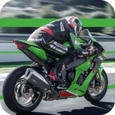
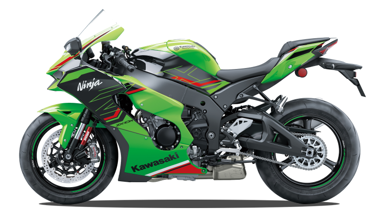
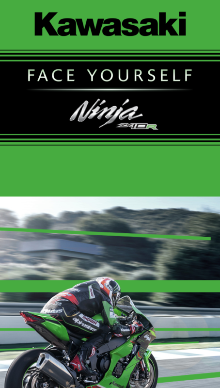
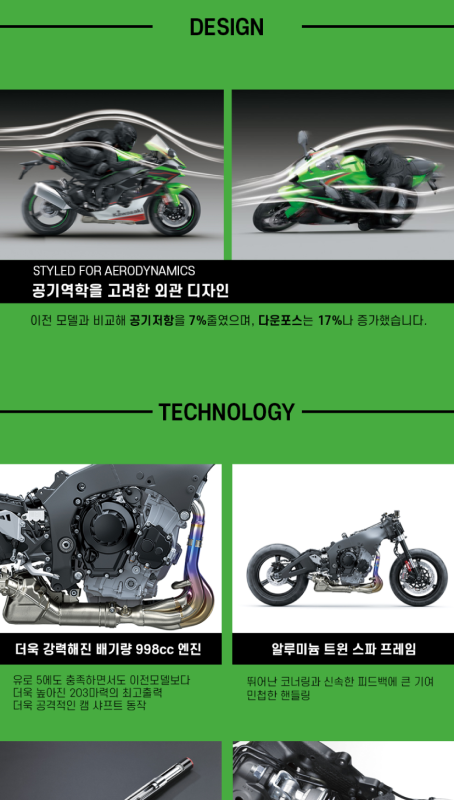

Kawasaki Zx-10-R 상세페이지
포토샵, 약 5시간
Kawasaki Zx-10-R
일본 바이크 회사인 Kawasaki사 의 플래그십 모델인Zx-10-R 모델을
상세 페이지로 제작해 보았습니다.
Kawasaki Ninja시리즈의 상징이라고 할 수 있는 라임그린색으로 포인트를 주었고
그 외에 바이크의 상세 스펙도 상세페이지로 만들었습니다.


